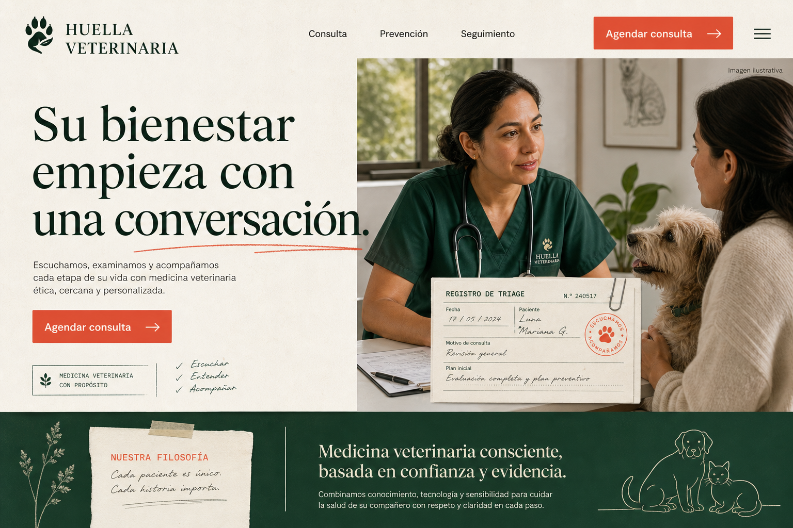
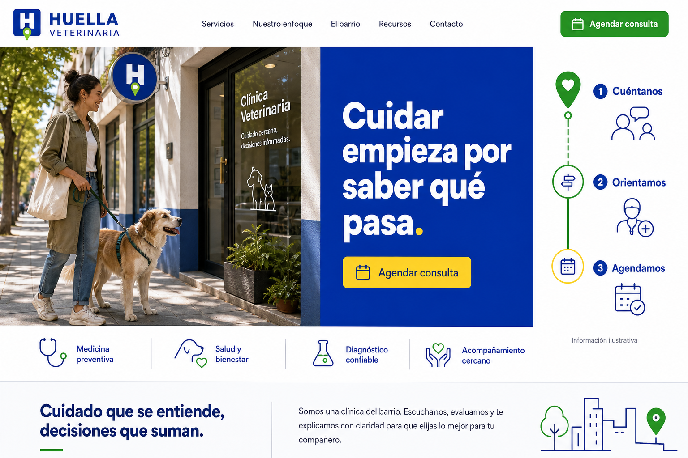
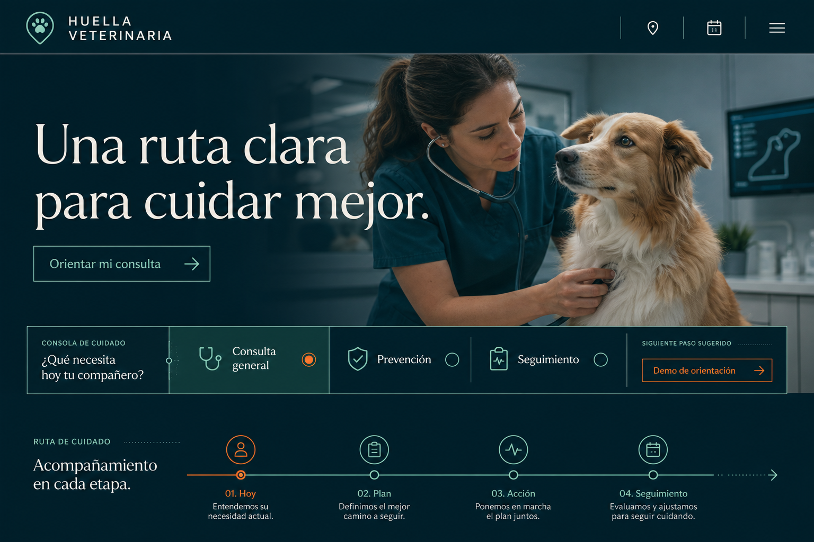
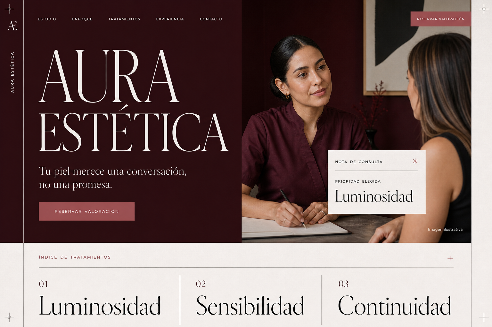
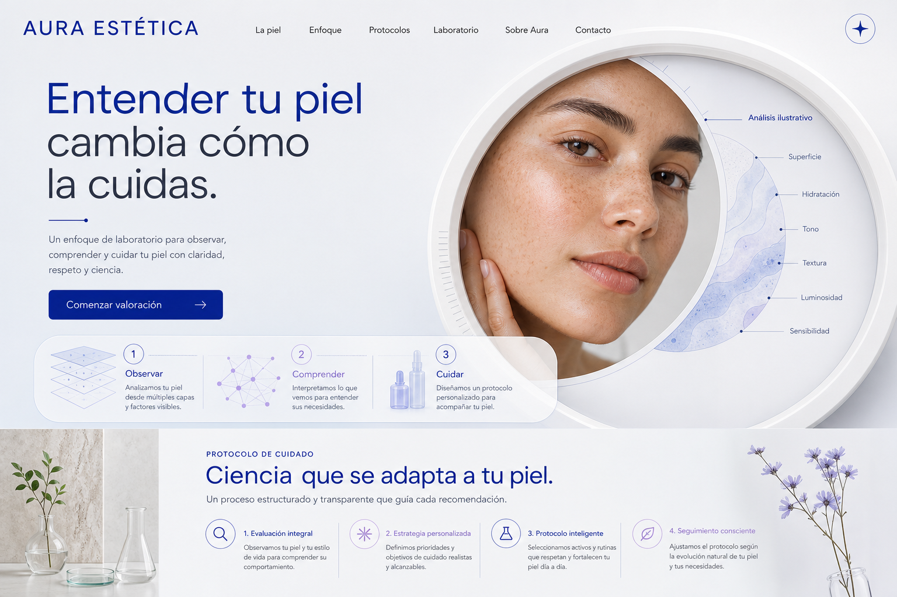
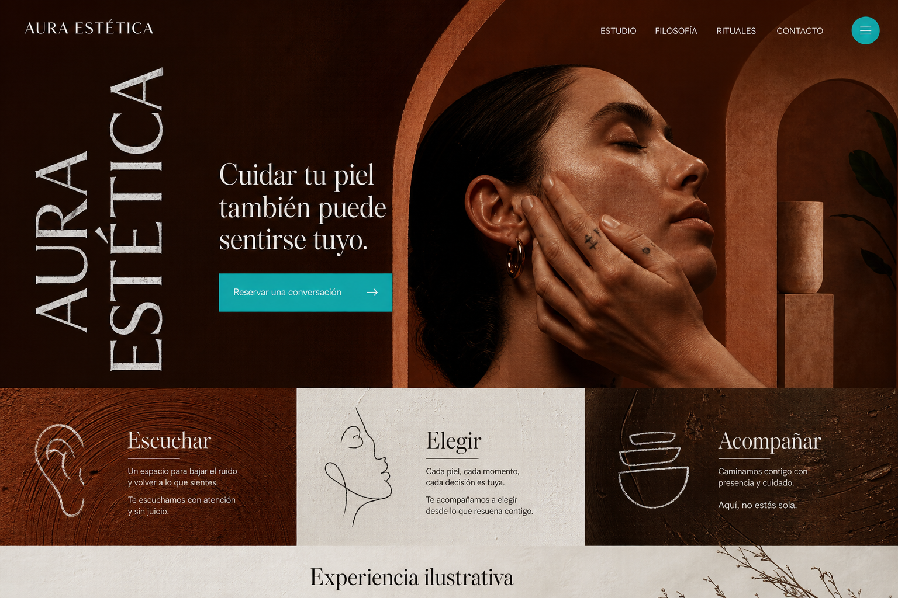

Humana, cercana y artesanal.
Mockups conceptuales creados con Impeccable. Selecciona una opción de cada sector o combina elementos antes de implementar.
Confianza, orientación y agenda.

Humana, cercana y artesanal.

Directa, enérgica y comercial.

Premium, precisa y digital.
Atención, criterio y experiencia.

Elegante, íntima y profesional.

Luminosa, científica y contemporánea.

Artística, cálida y diferenciada.